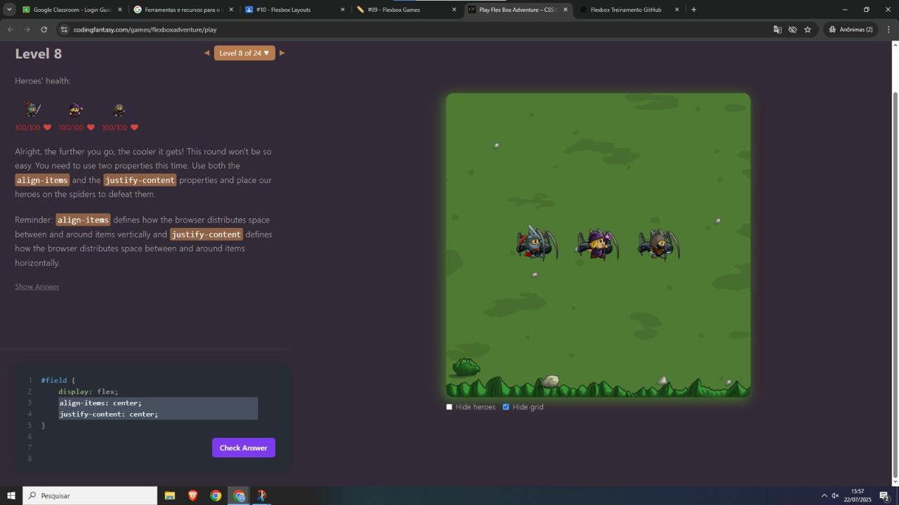

Relatório: Prática com Flexbox
Cristal Dáfinny
Jogos Escolhidos
-
Flexbox Froggy

Link: Jogue Também (se quiser)
Justificativa: Escolhi este jogo por sua abordagem divertida e progressiva de ensinar Flexbox com desafios visuais claros e bem explicados.
-
Play Flex Box Adventure – CSS Game to Learn Flexbox
Link: Jogue! (com conscentimento)
Justificativa: A estética e a história envolvente tornam o aprendizado mais divertido, além de apresentar situações realistas.
Níveis
Flexbox Froggy
Nível 8: Desafio com row.
Foi desafiador pois exigem uma nova propriedade, o row-reverse, que coloca os itens opostos a direçao do texto.
Nível 10: Desafio com `align-items: flex-end` e `justify-content: center`.
Nível um pouco mais complicado pois é preciso manipular os eixos simultaneamente exige entender bem o comportamento do eixo principal vs. eixo cruzado.
Nível 12: Uso de várias propriedades simultaneamente.
Foi o mais desafiador pois exigia o uso de `flex-direction`, `justify-content` juntos para acertar a posição dos sapos.
Play Flex Box Adventure – CSS Game to Learn Flexbox
Fase 8: Uso de `flex-wrap: wrap` com múltiplos elementos.

Difícil por envolver align-items e distribuição de espaço ao mesmo tempo.
Fase 9: Combinação de `justify-content: space-between` com `align-items: center`.
Desafiador pois o alinhamento dos cavaleiros nas duas direções exige bastante atenção visual, o space-between me confundiu.
Fase 10: Aplicação de `flex-direction: column`.
Foi apresentado o conceito de column, em que os cavalheiros deveriam ficar em coluna para derrotar os monstros.
Aplicação
Propriedades CSS utilizadas:
- display: flex – Ativa o Flexbox no container
- justify-content– Alinha os itens no eixo principal
- align-items– Alinha os itens no eixo cruzado
- flex-direction – Define a direção dos itens seja linha ou coluna
Aplicação Prática:
A distribuição dos cards pode ser controlada com justify-content: space-between para espaçamento uniforme e align-items: stretch para garantir que todos os cards tenham altura igual, mesmo que o conteúdo interno varie. Caso seja necessário destacar um card específico (como o projeto mais recente), pode-se usar order: -1 para posicioná-lo à frente visualmente, sem alterar sua posição no código-fonte — o que também é benéfico para acessibilidade.